Build Software for PS Subsystems¶
This chapter lists the steps to configure and build software for PS subsystems. In this chapter, you will use the Zynq® UltraScale+™ hardware platform (hardware definition file) configured in the Vivado® Design Suite.
In Chapter 2: Zynq UltraScale+ MPSoC Processing System Configuration, you created and exported the hardware platform from Vivado. This hardware platform contains the hardware handoff file, the processing system initialization files (psu_init), and the PL bitstream. In this chapter, you will use the hardware platform in the Vitis™ IDE and PetaLinux to configure software for the processing system.
This chapter serves two important purposes. One, it helps you build and configure the software components that can be used in future chapters. Second, it describes the build steps for a specific PS subsystem.
Processing Units in Zynq UltraScale+¶
The main processing units in the processing system in Zynq UltraScale+ are listed below.
Application Processing Unit: Quad-core Arm® Cortex™-A53 MPCore Processors.
Real Time Processing Unit: Dual-core Arm Cortex™-R5F MPCore Processors.
Graphics Processing Unit: Arm Mali™ 400 MP2 GPU
Platform Management Unit (PMU):
This section demonstrates configuring these units using system software. This can be achieved either at the boot-level using First Stage Boot Loader (FSBL) or via system firmware, which is applicable to the platform management unit (PMU).
You will use the Zynq UltraScale+ hardware platform in the Vitis IDE to perform the following tasks:
Create a First Stage Boot Loader (FSBL) for the Arm Cortex-A53 64-bit quad-core processor unit (APU) and the Cortex-R5F dual-core real-time processor unit (RPU).
Create bare-metal applications for APU and RPU.
Create platform management unit (PMU) firmware for the platform management unit using the Vitis IDE.
In addition to the bare-metal applications, this chapter also describes building U-Boot and Linux Images for the APU. The Linux images and U-Boot can be configured and built using the PetaLinux build system.
Creating a Platform Using Vitis IDE¶
Launch the Vitis IDE from the Windows start menu shortcut or by double-clicking the
C:\Xilinx\Vitis\2020.1\bin\vitis.batfile.Select the workspace and continue.
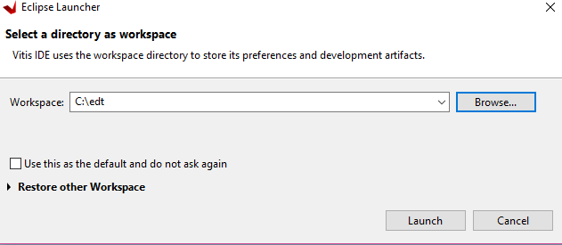
In the Vitis IDE, go to File → New → Platform Project.
In the Create New Platform page, enter the platform name and click Next.
In the Platform view, select Create from hardware specification (XSA). Browse the XSA file and select the preferred operating system, processor, and architecture.
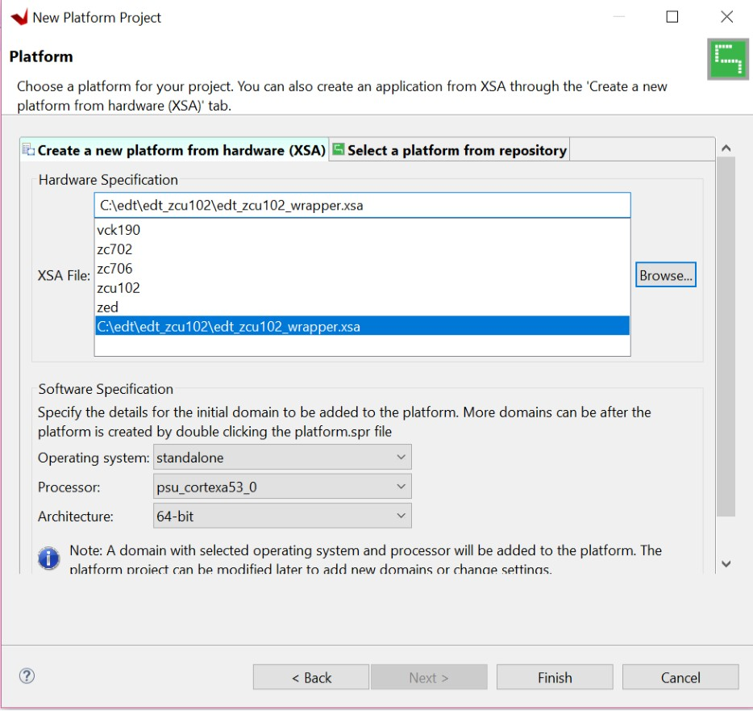
Click Finish.
In a few minutes, the Vitis IDE generates the platform. The files that are generated are displayed in the explorer window as shown in the following figure.
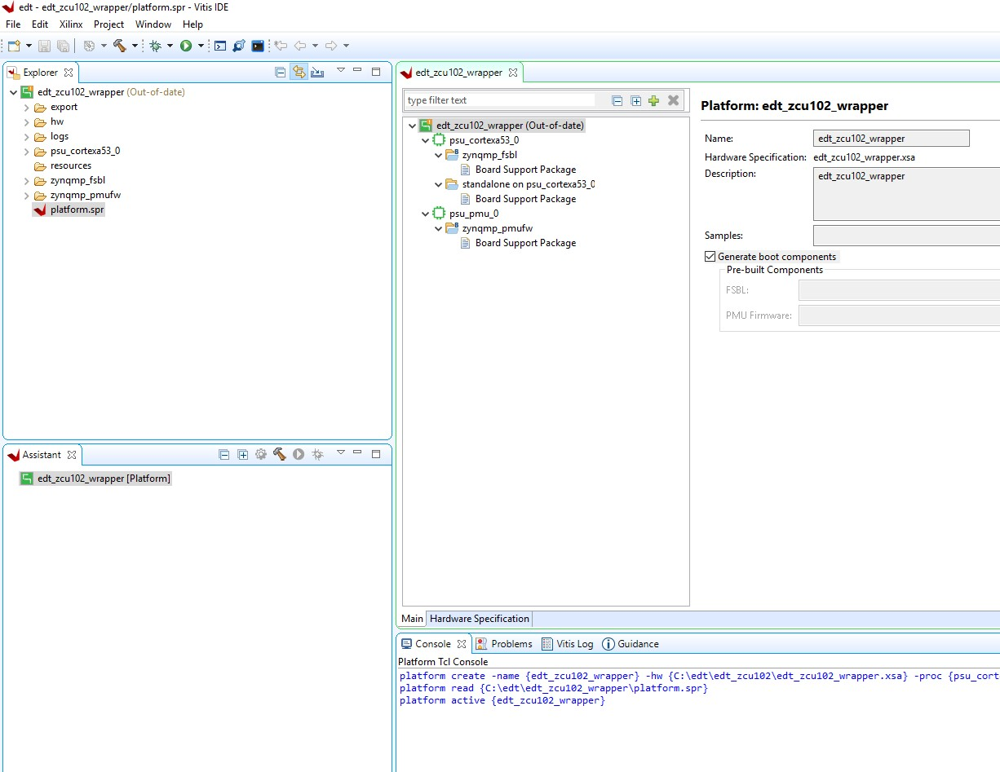
Default FSBL and PMU firmware comes with the platform project and psu_cortexa53_0 domain also added to the platform. We can add multiple domains to platform and we can also create FSBL like any other application.
Optional: To add the following libraries by modifying the standalone on psu_cortexa53_0 domain, follow these steps:
a. Double-click the standalone on psu_cortexa53_0 BSP.
b. Click Modify BSP Settings.
c. On the Overview page, select the xilffs, xilpm, xilsecure libraries.
Now build the hardware by right-clicking the platform, then selecting Build Project.
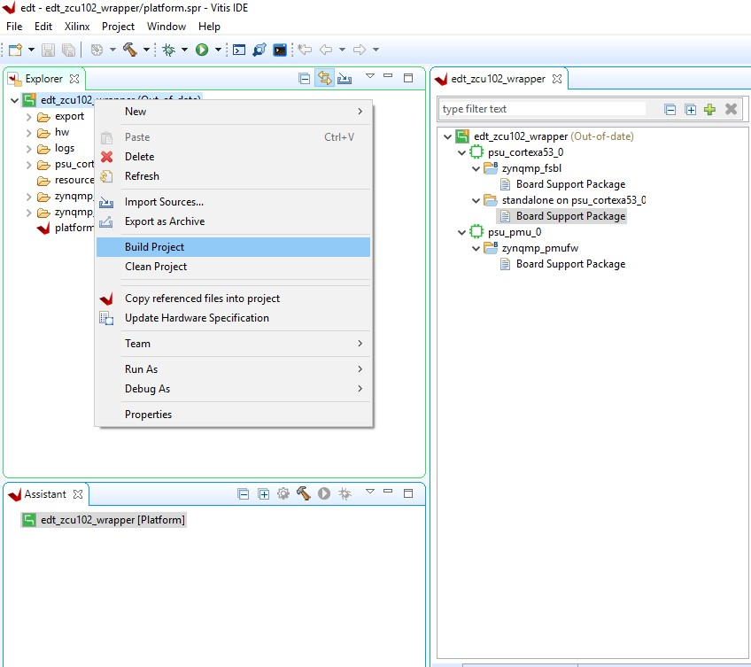
The hardware platform is ready. You can create applications using this platform and test on zcu102 hardware.
Example Project: Running the “Hello World” Application from Arm Cortex-A53¶
In this example, you will learn how to manage the board settings, make cable connections, connect to the board through your PC, and run a simple hello world software application from Arm Cortex-A53 in JTAG mode using System Debugger in the Vitis IDE.
Board Setup¶
Connect the power cable to the board.
Connect a USB micro cable between the Windows host machine and J2 USB JTAG connector on the target board.
Connect a USB micro cable to connector J83 on the target board with the Windows host machine. This is used for USB to serial transfer.
IMPORTANT! Ensure that SW6 Switch, on the bottom right, is set to JTAG boot mode as shown in the following figure.

Power on the ZCU102 board using the switch indicated in the figure below.
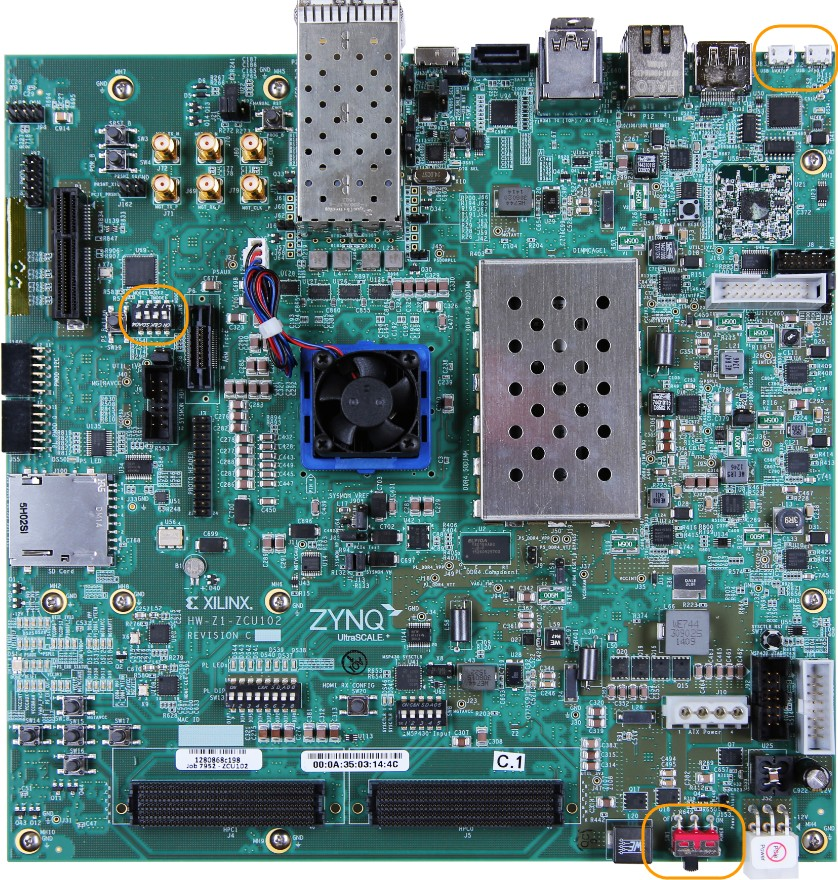
To send the “Hello World” string to the UART0 peripheral, follow these steps:
Open the Vitis IDE and set the workspace path to your project file, which in this example is
C:\\edt.Alternately, you can open the Vitis IDE with a default workspace and later switch it to the correct workspace by selecting File→ Switch Workspace and then selecting the workspace.
Open a serial communication utility for the COM port assigned on your system. The Vitis IDE provides a serial terminal utility, which will be used throughout the tutorial; select Window→ Show View→ Terminal to open it.
Click the Connect button to set the serial configuration and connect it.
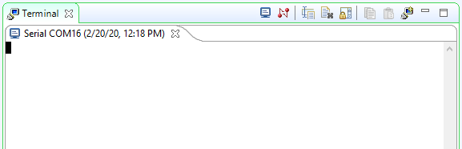
To modify, disconnect the connection by clicking the Disconnect button.
Click the Settings button to open the Terminal Settings view.
Verify the port details in the device manager.
UART-0 terminal corresponds to COM port with Interface-0. For this example, UART-0 terminal is set by default, so for the COM port, select the port with interface-0.
The following figure shows the standard configuration for the Zynq UltraScale+ MPSoC Processing System.
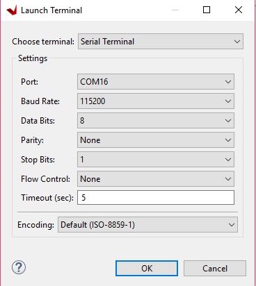
Select File→ New → Application Project. The Create new application project wizard welcome screen opens.
Click Next.
Use the information in the table below to make your selections in the wizard screens.
Table 3: **New Application Project Settings for Standalone APU Application
| Wizard Screen | System Properties | Settings |
|---|---|---|
| Platform | Select platform from repository | edt_zcu102_wrapper |
| Application project details | Application project name | test_a53 |
| System project name | test_a53_system | |
| Target processor | psu_cortexa53_0 | |
| Domain | Domain | standalone on psu_cortexa53_0 |
| Templates | Available templates | Hello World |
The Vitis IDE creates the test_a53 application project and
test_a53_system project in the Explorer view. Right-click the
**test_a53 application project** and select **Build** to build the
application.
Right-click test_a53 and select Run as → Run Configurations.
Right-click Xilinx Application Debugger and click New Configuration.
The Vitis IDE creates the new run configuration, named Debugger_test_a53-Default.
The configurations associated with the application are pre-populated in the Main page of the launch configurations.
Click the Target Setup page and review the settings.
Note: The board should be in JTAG boot mode before power cycling.
Power cycle the board.
Click Run.
Hello World appears on the serial communication utility in Terminal 1, as shown in the following figure.
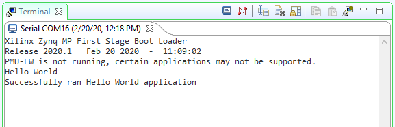
Note: There was no bitstream download required for the above software application to be executed on the Zynq UltraScale+ evaluation board. The Arm Cortex-A53 quad-core is already present in the processing system. Basic initialization of this system to run a simple application is done by the device initialization Tcl script.
Power cycle the board and retain same connections and board settings for the next section.
What Just Happened?¶
The application software sent the “Hello World” string to the UART0 peripheral of the PS section.
From UART0, the “Hello world” string goes byte-by-byte to the serial terminal application running on the host machine, which displays it as a string.
Creating a Domain for cortexr5_0¶
To create a Vitis domain for cortexr5_0, follow these steps:
The edt_zcu102_wrapper platform is, by default, assigned the default domain for psu_cortexa53_0. For applications targeting the RPU, you have to create a domain for cortexr5_0.
Double-click
platform.spr. The platform opens in the Explorer view.Click in the top-right corner to add a domain .
Create a domain with the following settings:
Table 4: Settings to Create a New Domain
| System Properties | Setting or Command to Use |
|---|---|
| Name | psu_cortexr5_0 |
| Display name | psu_cortexr5_0 |
| OS | Standalone |
| Version | Standalone (7.1) |
| Processor | psu_cortexr5_0 |
| Supported Runtime | C/C++ |
| Architecture | 32-bit |
The Vitis IDE creates a new domain and psu_cortexr5_0 appears under the edt_zcu102_wrapper platform.
Note: Add the xilffs, xilpm, and xilsecure libraries by modifying psu_cortexr5_0 domain. To do so, double-click standalone on psu_cortexr5_0 BSP, then click Modify BSP Settings. On the Overview page, select the desired libraries.
Example Project: Running the “Hello World” Application from Arm Cortex-R5¶
In this example, you will learn how to manage the board settings, make cable connections, connect to the board through your PC, and run a simple hello world software application for the Arm Cortex-R5F processor in the JTAG mode using System Debugger in the Vitis IDE.
Note: If you have already set up the board, skip to step 5.
Connect the power cable to the board.
Connect a USB micro cable between the Windows Host machine and the J2 USB JTAG connector on the target board.
Connect a USB cable to connector J83 on the target board with the Windows Host machine. This is used for USB to serial transfer.
Power on the ZCU102 board using the switch indicated in
Note: If the Vitis IDE is already open, jump to step 6.
Launch the Vitis IDE and set the workspace path to your project file, which in this example is
C:\\edt\.Alternately, you can open the Vitis IDE with a default workspace and later switch it to the correct workspace by selecting File → Switch Workspace and then selecting the workspace.
Open a serial communication utility for the COM port assigned on your system. The Vitis IDE provides a serial terminal utility, which will be used throughout the tutorial; select Window → Show View→ Terminal to open it.
Click Connect to set the serial configuration and connect it.
Click Settings to open the Terminal Settings view.
The Com-port details can be found in the device manager on host machine. UART-0 terminal corresponds to Com-Port with Interface-0. For this example, UART-0 terminal is set by default, so for the Com-port, select the port with interface-0. The following figure shows the standard configuration for the Zynq UltraScale+ MPSoC Processing System.
In the Vitis IDE, switch back from the Debug perspective to the C/C++ perspective by selecting Windows→ Open Perspective → C/C++.
Ignore this step, if the Vitis IDE is already in the C/C++ perspective.
Select File→ New → Application Project. The New Project wizard opens.
Use the information in the following table to make your selections in the wizard screens.
Table 5: System Properties
| Wizard Screen | System Properties | Settings |
|---|---|---|
| Platform | Select platform from repository | edt_zcu102_wrapper |
| Application project details | Application project name | hello_world_r5 |
| System project name | hello_world_r5_system | |
| Target processor | psu_cortexr5_0 | |
| Domain | Domain | psu_cortexr5_0 |
| Templates | Available templates | Hello World |
The Vitis IDE creates the hello_world_r5 application project and
hello_world_r5_system project under the Project Explorer. You have to
compile the application manually.
Right-click hello_world_r5 and select Run as → Run Configurations.
Right-click Xilinx Application Debugger and click New Configuration.
The Vitis IDE creates the new run configuration, named Debugger_hello_world_r5-Default. The configurations associated with the application are pre-populated in the Main page of the launch configurations.
Click the Target Setup page and review the settings.
This file is exported when you create the platform using the Vitis IDE; it contains the initialization information for the processing system.
Click Run.
“Hello World” appears on the serial communication utility in Terminal 1, as shown in the following figure.
Note: There was no bitstream download required for the above software application to be executed on the Zynq UltraScale+ evaluation board. The Arm Cortex-R5F dual core is already present on the board. Basic initialization of this system to run a simple application is done by the device initialization Tcl script.
What Just Happened?¶
The application software sent the “Hello World” string to the UART0 peripheral of the PS section.
From UART0, the “Hello world” string goes byte-by-byte to the serial terminal application running on the host machine, which displays it as a string.
Additional Information¶
Domain¶
A domain can refer to the settings and files of a standalone BSP, a Linux OS, a third-party OS/BSP like FreeRTOS, or a component like the device tree generator.
Board Support Package¶
The board support package (BSP) is the support code for a given hardware platform or board that helps in basic initialization at power up and helps software applications to be run on top of it. It can be specific to some operating systems with boot loader and device drivers.
TIP: *To reset the BSP source, double-click platform.prj, select a BSP in a domain, and click Reset BSP Source. This action only resets the source files while settings are not touched. To change the target domain after an application project creation, double-click the project.prj file in Explorer view. In the Application Project Settings, select Domain→Domain change option →Drop-down Domain, then select available domains for this application.
Standalone BSP¶
Standalone is a simple, low-level software layer. It provides access to basic processor features such as caches, interrupts, and exceptions, as well as the basic processor features of a hosted environment. These basic features include standard input/output, profiling, abort, and exit. It is a single threaded semi-hosted environment.
Example Project: Create a Bare-Metal Application Project in the Vitis IDE¶
For this example, you will launch the Vitis IDE and create a bare-metal application using the hardware platform for Zynq UltraScale+ created using the Vivado Design Suite.
Create Custom Bare-Metal Application for Arm Cortex-A53 based APU¶
Now that the FSBL is created, you will now create a simple bare-metal application targeted for an Arm A53 Core 0.
For this example, you will use the test_a53 application that you created in Example Project: Running the “Hello World” Application from Arm Cortex-A53.
In test_a53, you selected a simple Hello World application. This application can be loaded on APU by FSBL running on either APU or RPU. The Vitis IDE also provides a few other bare-metal application templates to make it easy to start running applications on Zynq UltraScale+ devices. Alternatively, you can also select the Empty Application template and copy or create your custom application source code in the application folder structure.
Modify the Application Source Code¶
In the Explorer view, click test_a53 → src → helloworld.c.
This opens the helloworld.c source file for the test_a53 application.
Modify the arguments in the print command, as shown below.
Print(\"Hello World from APU\\n\\r\");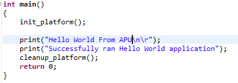
Type Ctrl + S to save the changes.
Right-click the test_a 53 project and select Build Project.
Verify that the application is compiled and linked successfully and the test_a53.elf file is generated in the test_a53 → Debug folder.
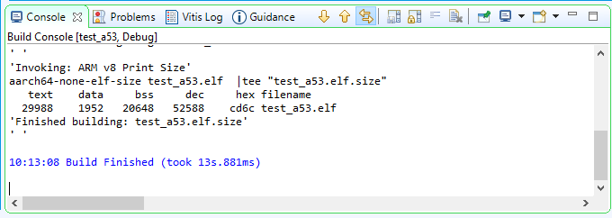
Create Custom Bare-Metal Application for Arm Cortex-R5 based RPU¶
In this example, you will create a bare-metal application project for Arm Cortex-R5F based RPU. For this project, you will need to import the application source files available in the Design Files ZIP file released with this tutorial. For information about locating these design files, refer to Design Files for This Tutorial.
Creating the Application Project¶
In the Vitis IDE, select File→ New → Application Project to open the New Project wizard.
Use the information in the following table to make your selections in the wizard.
Table 6: Settings to Create New RPU Application Project
| Wizard Screen | System Properties | Settings |
|---|---|---|
| Platform | Select platform from repository | edt_zcu102_wrapper |
| Application project details | Application project name | testapp_r5 |
| System project name | testapp_r5_system | |
| Target processor | psu_cortexr5_0 | |
| Domain | Domain | psu_cortexr5_0 |
| Templates | Available templates | Empty application |
Click Finish.
The New Project wizard closes and the Vitis IDE creates the testapp_r5 application project, which can be found in the Explorer view.
In the Explorer view, expand the testapp_r5 project.
Right-click the src directory, and select Import to open the Import view.
Expand General in the Import view and select File System.
Click Next.
Select Browse and navigate to the design files folder, which you saved earlier (see Design Files for This Tutorial).
Click OK.
Select the testapp.c file.
Click Finish.
Open testapp.c to review the source code for this application. The application configures the UART interrupt and sets the processor to WFI mode. This application is reused and explained during runtime in Chapter 5: Boot and Configuration.
Modifying the Linker Script¶
In the Explorer view, expand the testapp_r5 project.
In the src directory, double-click lscript.ld to open the linker script for this project.
In the linker script, in Available Memory Regions, modify following attributes for psu_r5_ddr_0_MEM_0:
Base Address: 0x70000000
Size: 0x10000000
The linker script modification is shown in following figure. The following figure is for representation only. Actual memory regions may vary in case of Isolation settings.
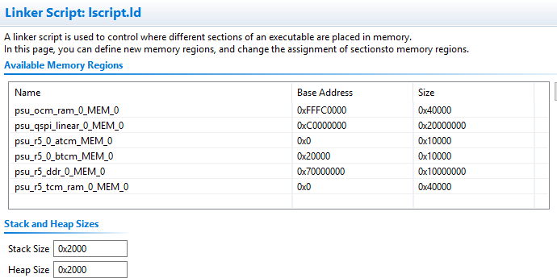
This modification in the linker script ensures that the RPU bare-metal application resides above 0x70000000 base address in the DDR, and occupies no more than 256 MB of size.
Type Ctrl + S to save the changes.
Right-click the testapp_r5 project and select Build Project.
Verify that the application is compiled and linked successfully and that the
testapp_r5.elffile was generated in the testapp_r5/Debug folder.
Modifying the Board Support Package¶
The ZCU102 Evaluation kit has a USB-TO-QUAD-UART Bridge IC from Silicon Labs (CP2108). This enables you to select a different UART port for applications running on Cortex-A53 and Cortex-R5F cores. For this example, let Cortex-A53 use the UART 0 by default, and send and receive RPU serial data over UART 1. This requires a small modification in the r5_bsp file.
Navigate to psu_cortexr5_0 domain BSP settings. In the Board Support Package Settings page, expand Overview and click Standalone.
Modify the stdin and stdout values to psu_uart_1, as shown in the figure below.
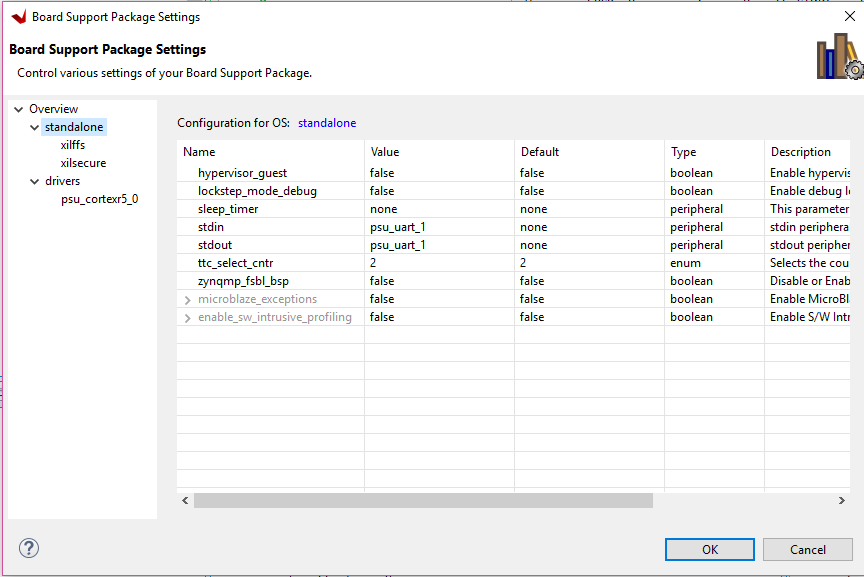
Click OK.
Build the psu_cortexr5_0 domain and the testapp_r5 application.
Verify that the application is compiled and linked successfully and that the
testapp_r5.elfwas generated in thetestapp_r5/Debugfolder.
Reviewing Software Projects in the Platform¶
Reviewing FSBL in Platform¶
To review the FSBL in platform, follow these steps:
In the Explorer view, navigate to zynqmp_fsbl by expanding the edt_zcu102_wrapper platform (right pane) to see the FSBL source code for Zynq-7000 devices. You can edit this source for customizations.
The platform generated FSBL is involved in PS initialization while launching standalone applications using JTAG.
This FSBL is created for the psu_cortexa53_0, but you can also re-target the FSBL to psu_cortexr5_0 using the re-target to psu_cortexr5_0 option in the zynqmp_fsbl domain settings.
Reviewing PMU Firmware in Platform¶
To review the PMU firmware in the platform, follow these steps:
Click the desired platform drop-down menu to view the zynqmp_pmufw software project that was created within the platform by default.
The zynqmp_pmufw software project contains the source code of PMU firmware for psu_pmu_0. Compile and run the firmware on psu_pmu_0.
The psu_pmu_0 processor domain is created automatically for the zynqmp_pmufw software project.
Create First Stage Boot Loader for Arm Cortex-A53-Based APU¶
FSBL can load the required application or data to memory and launch applications on the target CPU core. One FSBL has been provided in the platform project but you can create an additional FSBL application as a general application for further modification or debugging purposes.
In this example, you will create an FSBL image targeted for Arm Cortex-A53 core 0.
Launch the Vitis IDE if it is not already open.
Set the Workspace path based on the project you created in Chapter 2: Zynq UltraScale+ MPSoC Processing System Configuration. For example,
C:\\edt.Select File→ New → Application Project. The New Project dialog box opens.
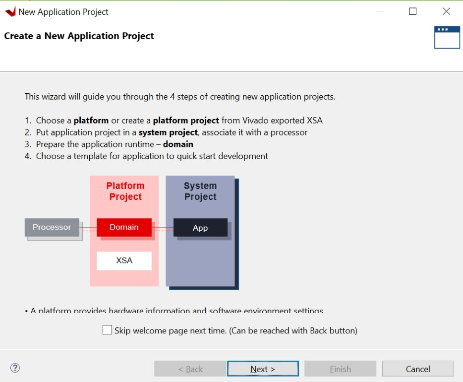
Use the information in the following table to make your selections in the New Project wizard:
Table 7: Settings to Create New Application Project - FSBL_A53
| Wizard Screen | System Properties | Settings |
|---|---|---|
| Platform | Select platform from repository | edt_zcu102_wrapper |
| Application project details | Application project name | fsbl_a53 |
| System project name | fsbl_a53_system | |
| Target processor | psu_cortexa53_0 | |
| Domain | Domain | standalone on |
| psu_cortexa53_0 | ||
| Templates | Available templates | Zynq MP FSBL |
In the Templates page, select Zynq MP FSBL.
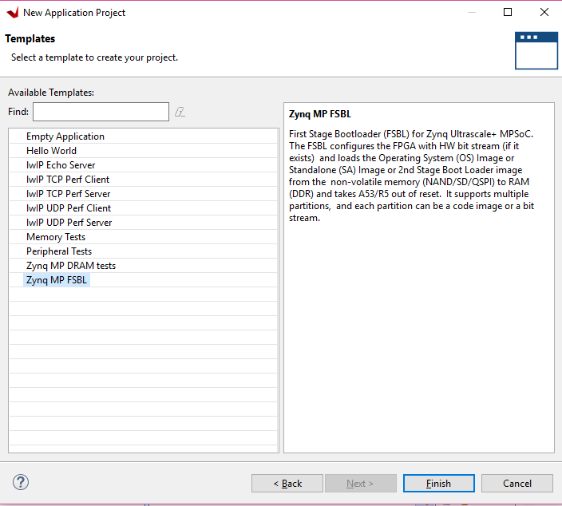
Click Finish.
The Vitis IDE creates the system project and the FSBL application.
By default, the FSBL is configured to show basic print messages. Next, you will modify the FSBL build settings to enable debug prints. For a list of the possible debug options for FSBL, refer to the fsbl_a53/src/xfsbl_debug.h file.
For this example, enable FSBL_DEBUG_INFO by doing the following:
In the Explorer view, right-click the fsbl_a53 application.
Click C/C++ Build Settings.
Select Settings→ ARM V8 gcc compiler→ Symbols.
Click the Add button.
Enter FSBL_DEBUG_INFO.
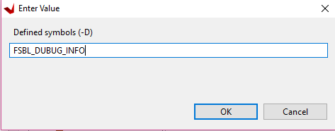
The symbols settings are as shown in the following figure.
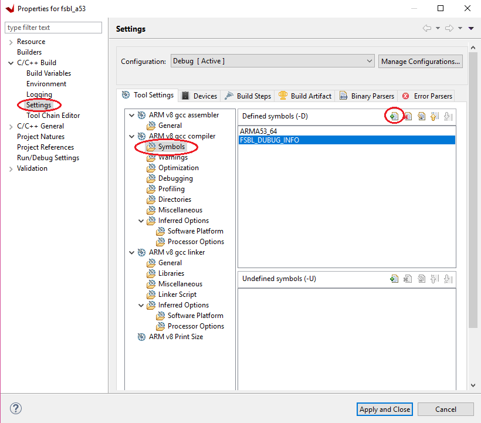
Click OK to accept the changes and close the Settings view.
Navigate to the BSP settings. Under Overview → Drivers → psu_cortexa53_0 → extra_compiler_flags, edit extra_compiler_flags to append -Os -flto -ffat-lto- objects.
Right-click the fsbl_a53 application and select Build Project.
The FSBL executable is now saved as fsbl_a53/debug/fsbl_a53.elf.
In this tutorial, the application name fsbl_a53 is to identify that the FSBL is targeted for APU (the Arm Cortex-A53 core).
Note: If the system design demands, the FSBL can be targeted to run on the RPU.
Example Project: Create Linux Images using PetaLinux¶
The earlier example highlighted creation of the bootloader images and bare-metal applications for APU, RPU, and PMU using the Vitis IDE. In this example, you will configure and build Linux Operating System Platform for Arm Cortex-A53 core based APU on Zynq UltraScale+. You can configure and build Linux images using the PetaLinux tool flow, along with the board-specific BSP.
IMPORTANT! >1. This example needs a Linux Host machine. PetaLinux Tools Documentation: Reference Guide (UG1144) for information about dependencies for PetaLinux 2020.1. >1. This example uses the ZCU102 PetaLinux BSP to create a PetaLinux project. Ensure that you have downloaded the ZCU102 BSP for PetaLinux as instructed in PetaLinux Tools.
Create a PetaLinux project using the following command:
This creates a PetaLinux project directory, for example, xilinx-zcu102-2020.1.
Note: xilinx-zcu102-v2020.1-final.bsp is the PetaLinux BSP for ZCU102 Production Silicon Rev1.0 Board. Use xilinx-zcu102-ZU9-ES2-Rev1.0-v2020.1-final.bsp, if you are using ES2 Silicon on Rev 1.0 board.
Change to the PetaLinux project directory using the following command:
$ cd xilinx-zcu102-2020.1The ZCU102 PetaLinux-BSP is the default ZCU102 Linux BSP. For this example, you reconfigure the PetaLinux Project based on theZynq UltraScale+ hardware platform that you configured using Vivado Design Suite in Chapter 2: Zynq UltraScale+ MPSoC Processing System Configuration.
Copy the hardware platform edt_zcu102_wrapper.xsa to the Linux Host machine.
Reconfigure the project using the following command:
This command opens the PetaLinux Configuration window. If required, make changes in the configuration. For this example, the default settings from the BSP are sufficient to generate required boot images.
The following steps will verify if PetaLinux is configured to create Linux and boot images for SD Boot.
Select Subsystem AUTO Hardware Settings.
Under Advanced Bootable Images Storage Settings submenu, do the following:
a. Select boot image settings.
b. Select Image Storage Media.
c. Select primary sd as the boot device.
Under the Advanced Bootable Images Storage Settings submenu, do the following:
a. Select kernel image settings.
b. Select Image Storage Media.
c. Select primary sd as the storage device.
Under Subsystem AUTO Hardware Settings, select Memory Settings and set the System Memory Size to
0x6FFFFFFF.Return to the main menu. In Image Packaging Configuration, set the root file system type to INITRAMFS.
Save the configuration settings and exit the Configuration wizard.
Wait until PetaLinux reconfigures the project.
The following steps will build the Linux images, verify them, and generate the boot image.
Modify the device tree to disable Heartbeat LED and SW19 push button from the device tree, so that the RPU R5-0 can use the PS LED and the SW19 switch for other designs in this tutorial. To do so, add the following to the
system-user.dtsifile:/include/ "system-conf.dtsi" / { gpio-keys { sw19 { status = "disabled"; }; }; }; &uart1 { status = "disabled"; };
The
system-user.dtsiis located at<PetaLinux-project>/project-spec/meta-user/recipes-bsp/device-tree/files/system-user.dtsi.In
<PetaLinux-project>, build the Linux images using the following command:$ petalinux-buildAfter the above statement executes successfully, verify the images and the timestamp in the images directory in the PetaLinux project folder using the following commands:
$ cd images/linux/ $ ls -alGenerate the Boot image using the following command:
$ petalinux-package --boot --fsbl zynqmp_fsbl.elf --u-bootThis creates a
BOOT.BINimage file in the following directory:<petalinux-project>/images/linux/BOOT.BINThe logs indicate that the above command includes PMU_FW and ATF in BOOT.BIN. You can also add
--pmufw <PMUFW_ELF>and--atf <ATF_ELF>in the above command. Refer$ petalinux-package --boot --helpfor more details.Note: The option to add bitstream, that is
--fpga, is missing from the above command intentionally because so far the hardware configuration is based pnly on PS with no design in PL. If a bitstream is present in the design,--fpgacan be added in the petalinux-package command as shown below:petalinux-package --boot --fsbl zynqmp_fsbl.elf --fpga system.bit --pmufw pmufw.elf --atf bl31.elf --u-boot u-boot.elf
Verify the Image on the ZCU102 Board¶
To verify the image, follow these steps:
Copy
BOOT.BIN,image.ub, andboot.scrfiles to the SD card. Hereboot.scris read by U-Boot to load kernel and rootfs.Load the SD card into the ZCU102 board, in the J100 connector.
Connect a Micro USB cable from ZCU102 Board USB UART port (J83), to USB port on the host Machine.
Configure the Board to Boot in SD-Boot mode by setting switch SW6 as shown in the following figure.
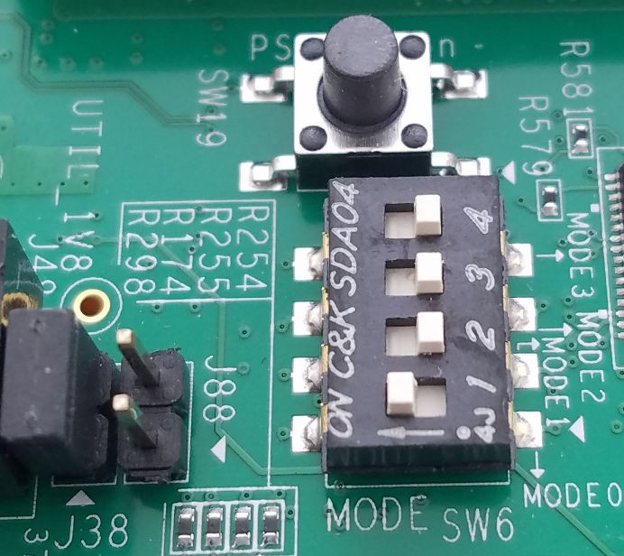
Connect 12V Power to the ZCU102 6-Pin Molex connector.
Start a terminal session, using Tera Term or Minicom depending on the host machine being used. set the COM port and baud rate for your system, as shown in the following figure.
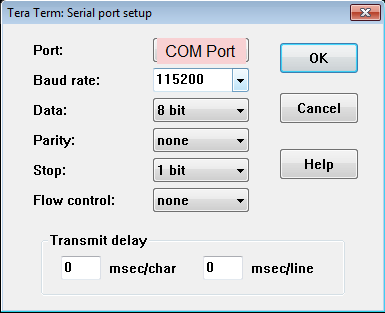
For port settings, verify COM port in the device manager and select the COM port with interface-0.
Turn on the ZCU102 Board using SW1, and wait until Linux loads on the board.
Create Linux Images Using PetaLinux for QSPI Flash¶
The earlier example highlighted creation of the Linux Images and Boot images to boot from an SD card. This section explains the configuration of PetaLinux to generate Linux images for QSPI flash. For more information about the dependencies for PetaLinux 2020.1, see the PetaLinux Tools Documentation: Reference Guide (UG1144).
Before starting this example, create a backup of the boot images created for SD card setup using the following commands:
$ cd <Petalinux-project-path>/xilinx-zcu102-2020.1/images/linux/ $ mkdir sd_boot $ cp image.ub sd_boot/ $ cp u-boot.elf sd_boot/ $ cp BOOT.BIN sd_boot/Change the directory to the PetaLinux Project root directory:
$ cd \<Petalinux-project-path\/xilinx-zcu102-2020.1Launch the top level system configuration menu:
$ petalinux-configThe Configuration wizard opens.
Select Subsystem AUTO Hardware Settings.
Under the Advanced bootable images storage Settings, do the following.
a. Select boot image settings.
b. Select image storage media.
c. Select primary flash as the boot device.
Under the Advanced bootable images storage Settings submenu, do the following:
a. Select kernel image settings.
b. Select image storage media.
c. Select primary flash as the storage device.
One level above, that is, under Subsystem AUTO Hardware Settings, do the following:
a. Select Flash Settings and notice the entries listed in the partition table.
Note: Some memory (0x1E00000 + 0x40000) is set aside for initial Boot partitions and U-Boot settings. These values can be modified on need basis.
b. Based on this, the offset for Linux Images is calculated as 0x1E40000 in QSPI Flash device. This will be used in Chapter 5: Boot and Configuration, while creating Boot image for QSPI Boot-mode.
The following steps will set the Linux System Memory Size to about 1.79 GB.
Under Subsystem AUTO Hardware Settings, do the following:
a. Select Memory Settings.
b. Set System Memory Size to
0x6FFFFFFF.Save the configuration settings and exit the Configuration wizard.
Rebuild using the
petalinux-buildcommand.Take a backup of u-boot.elf and the other images. These will be used in Chapter 5: Boot and Configuration.
Note: For more information, refer to the PetaLinux Tools Documentation: Reference Guide (UG1144).
In this chapter, you learned how to configure and compile software blocks for Zynq UltraScale+ devices using Xilinx tools. You will use these images in Chapter 6: System Design Examples to create Boot images for a specific design example.
Next, you will debug software for Zynq UltraScale+ devices using the Vitis IDE in Chapter 4: Debugging with the Vitis Debugger.